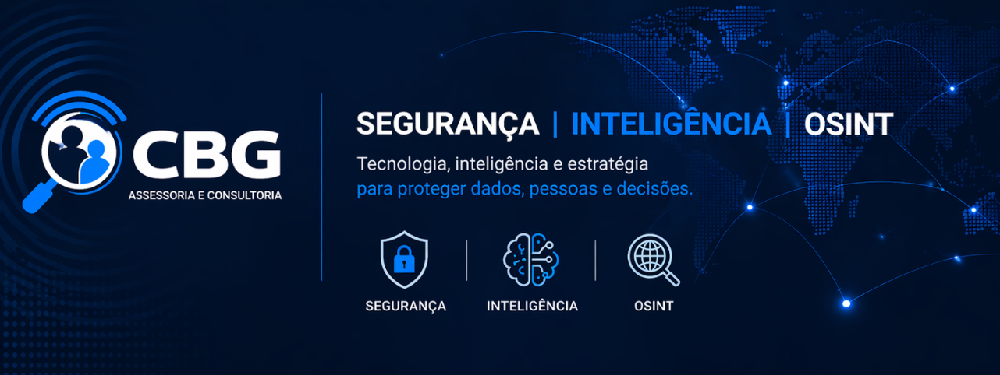
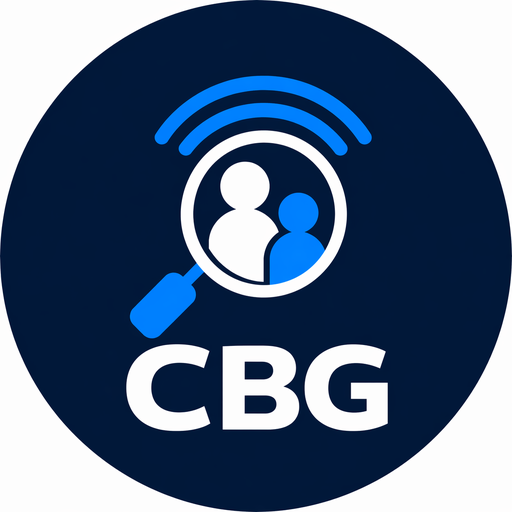

🛡️
Segurança da Informação
Assessoria técnica, avaliação de riscos, controles, hardening, processos e apoio à tomada de decisão.
Segurança · Inteligência · OSINT
A CBG Security atua na interseção entre Segurança da Informação, Cyber Threat Intelligence, investigação digital, AppSec, Cloud Security e automação defensiva.

Sobre
A CBG Security é uma iniciativa de assessoria e consultoria em segurança voltada para organizações que precisam transformar sinais técnicos em decisões claras. O trabalho combina análise ofensiva, defesa, inteligência, automação, governança e comunicação executiva.
Além de projetos profissionais, a atuação inclui produção de ferramentas, pesquisa aplicada e contribuição para a comunidade open source, com foco em compartilhar conhecimento e acelerar a maturidade de times de segurança.
Áreas de atuação
Serviços e frentes técnicas para segurança ofensiva, defensiva e inteligência.
Assessoria técnica, avaliação de riscos, controles, hardening, processos e apoio à tomada de decisão.
Organização de indicadores, enriquecimento de observáveis, priorização e geração de inteligência acionável.
Coleta, análise e correlação de dados públicos para investigações, exposição digital e abuso de marca.
Análise de APIs, abuso de endpoints, autenticação, autorização, BOLA/IDOR, WAF e resposta defensiva.
Avaliação de ambientes AWS, logs, WAF, Security Hub, IAM, exposição pública e arquitetura segura.
Fluxos de investigação, alertas, playbooks, evidências, ações controladas e integração com operações de SOC.
Open source e comunidade
Uma parte importante do trabalho é transformar problemas reais de segurança em aprendizado, documentação e ferramentas úteis para a comunidade.
Plataforma em desenvolvimento para observabilidade de APIs, correlação de casos, dashboard executivo e resposta defensiva controlada.
Base open source para Cyber Threat Intelligence, Digital Risk Protection, enriquecimento de IOCs e investigação de risco digital.
Automação segura para triagem, priorização e apoio a pesquisas de segurança, com foco em reduzir ruído e falso positivo.
Publicações técnicas, evidências, guias, scripts e experimentos voltados para segurança prática e compartilhamento de conhecimento.
Veja repositórios, projetos e experimentos públicos no GitHub.
Acessar GitHubPerfis

Contato
Para consultoria, parcerias, palestras, projetos técnicos ou troca de conhecimento, acesse os perfis oficiais e envie uma mensagem.